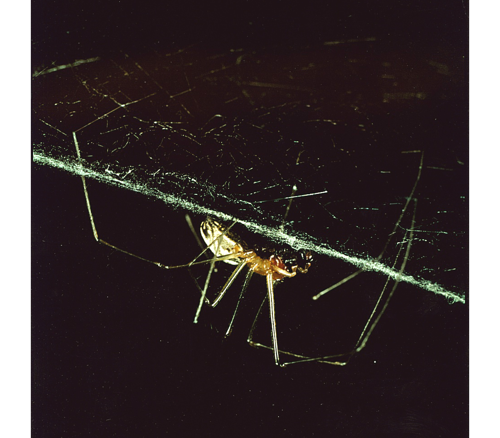
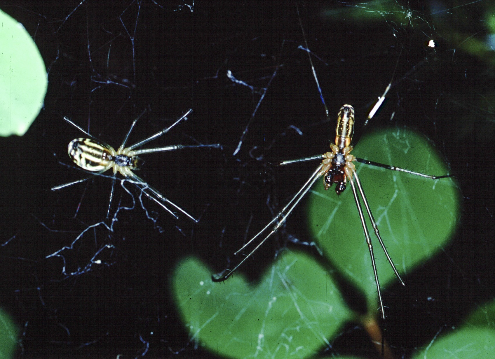
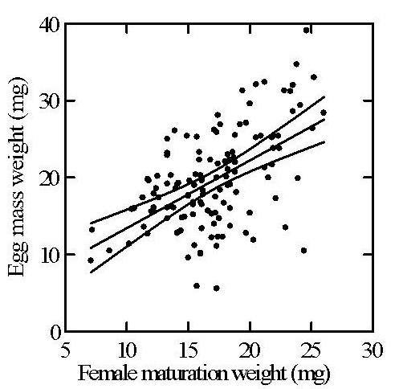
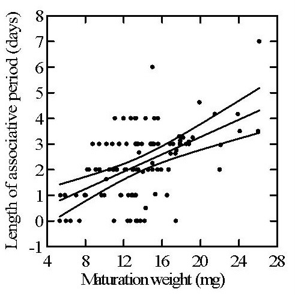

The Sierra Dome spider (Neriene litigiosa), formerly Linyphia litigiosa, is a North American sheet-weaving spider known for its unusually complex mating system, including female-controlled sperm use, elaborate male–male competition, and extended male mate guarding under female control. It has served as a long-term model system in evolutionary behavioral ecology, primarily through the research of Dr. Paul J. Watson.
This research program represents one of the most sustained and detailed studies of any single spider species, with continuous investigation of the Sierra Dome spider’s mating behavior, development, and individual variation over several decades. The system provides a rare opportunity to integrate field observation, experimental work, and evolutionary theory within a single, deeply characterized species.
For more than four decades, Paul J. Watson has used the Sierra Dome spider as a field and laboratory system for studying the fitness effects of mate and sire selection by females, the functions of polyandry, and how sexual selection shapes and maintains the development of individual differences in morphology, physiology, and behavior. These highly observable spiders live in accessible webs, exhibit dramatic courtship and male–male contest rituals, and show significant size, lifespan, and complex behavioral variation among individuals — features that make them ideal for connecting developmental biology to evolutionary theory.
The central question guiding my current work is how male and female spiders develop combinations of traits that together maximize lifetime mating and fertilization success. In males, this means exploring how physical and physiological condition, immune competence, disease exposure, and experience interact to produce distinctive behavioral “personalities.” Females are sequentially polyandrous by nature and have two different mate selection mechanisms, one for first mates and another for, typically, 1 to 3 secondary mates. Although males are dominant, females completely control whether mating occurs, and they can decide the proportion of each male’s ejaculate they allow into their pool of stored sperm for later use in fertilizing eggs.
Females may seek a form of nonrandom, limited strategic diversity among the males that sire their offspring. Moreover, the proportion of each male type that is optimal may vary among females and may shift year by year. Complex and dynamic female choice likely provides part of the selective context in which a fascinating diversity of male sexual strategies and corresponding physical and personality profiles is maintained. Another factor is yearly variation in the virulence of two rickettsial diseases that affect both sexes of the spider.
I cannot overemphasize what a fine model system this species is for deep sexual selection studies and, in spite of the large amount of background information on the system I have gathered since 1980, how much more there is to be discovered through continued observation and the use of modern technologies, including molecular genetics. Many questions of theoretical interest are not mentioned here — let me tell you about them! I am incredibly eager to support an avid and capable young investigator interested in continuing research on the Sierra Dome spider as a major component of their career in evolutionary behavioral ecology.
My current research emphasis on the spider, begun in 2024, is on individual development in males — the way that body form, physiological state, and behavior are integrated through development to produce individually optimized approaches to playing the mating games. Each male can be viewed as a dynamic system in which multiple traits — size, endurance, stridulation vigor, web use, risk taking, and immune profile — co-evolve and co-adjust to one another, informed by experience and self-assessment. Selection, including multi-modal female choice, favors combinations of traits that work well together rather than extremes of any single feature.
This approach treats “personality” not as a metaphor but as a quantifiable, integrative phenotype: a repeatable configuration of physical, physiological, and behavioral traits that together influence reproductive success. We ask how these configurations arise during juvenile development and how environmental variables such as food, temperature, parasites, and social encounters bias the trajectory toward one or another mature strategy.

Late in the penultimate instar, female Sierra Dome spiders undergo a striking behavioral transition. Before that shift, they are avoidant: a visiting mature male remains in the dome while the female stays far away, usually in the web’s superstructure, and males do not attempt overnight or multi-day guarding. Within roughly 1–7 days of sexual maturation, however, every female enters a very different state that I call associative behavior. In this state, she remains in close proximity to a male in the central dome of the web, tolerates contact, and actively maintains that proximity.
That behavioral switch has enormous consequences. Once a female becomes associative, males attempt to guard her continuously until she matures. Newly arriving males therefore encounter a guarded female and must fight the current guard if they hope to become her first mate. The result is an unbroken championship series of male–male contests extending across the female’s associative period. When the female finally matures, she mates immediately with the standing champion. Because first mates receive the great majority of fertilizations, this female-initiated system allows strong intrasexual selection to determine the male who sires most of her offspring.
Why this matters: associative behavior does not merely attract males. It creates the conditions for a coherent, multi-day sequence of contests that rigorously tests the eventual first mate. A male who repeatedly wins such fights is likely to reveal important components of overall fitness, including metabolic competence, immunocompetence, and aspects of developmental competence that matter to offspring quality.
Associative behavior is therefore both a sexual signal and a mechanism of female control over the structure of male competition. It is also strategically imprecise. The display tells males that the female is approaching sexual maturity, but it does not tell them exactly how long they will have to guard her. That imprecision is probably adaptive. If males could read exact time-to-maturation too well, some would decide that a relatively young associative female was not worth guarding, voluntarily abandon the web, and break the championship series.
Associative behavior is far from free, suggesting it is an honest signal of proximity to maturation; this is why all visiting males pay such amazingly strong attention to it. Guarding males are highly effective kleptoparasites, capturing the large majority of prey that lands on a female’s web. As a result, associative females lose substantial feeding opportunities during the days immediately preceding sexual maturation. This creates a real tradeoff between mate quality and future fecundity.

Even though egg sacs are produced much later, early adult condition still strongly predicts reproductive output. That makes prey loss before the final molt a genuine reproductive cost of associative behavior.

Heavier females can afford a longer period of guarding, kleptoparasitism, and male competition. In effect, they can invest more heavily in obtaining a more stringently tested first mate.
Taken together, these patterns suggest that females strategically balance the benefits of a longer championship series against the nutritional costs of prolonged male presence. Associative behavior is therefore a costly, condition-dependent signal: females in better condition can afford to begin it earlier and sustain more days of competition, while females in poorer condition pay a steeper price in lost maturation weight and hence later fecundity.
That costliness is important theoretically. It means associative behavior is not simply an on–off cue of impending mating opportunity. It is a female investment in the quality of sexual selection itself, paid for in reduced feeding and potentially reduced egg production.
An intriguing advance in this research program came from the careful work of my research assistant Rachel Bercovitz of Carleton College in the summer of 1999. While closely observing penultimate associative females in staged encounters between rival males in the lab, she discovered a distinctive graded display that had previously been recognized as a signal of receptivity to mating only in sexually mature females: a distinctive, rapid, rhythmic vibratory movement using all six legs that looks a bit like a tiny Irish dance on the web. We came to call this display skipping.
In penultimate females, skipping occurs in a very particular context. It appears almost exclusively when two males are present and a fight is imminent or already underway. Rachel’s observations suggested that skipping can reduce hesitation and help bring a contest to life when the males are slow to engage or not fighting with much enthusiasm. That discovery opened a new line of inquiry into how females may shape not only whether a championship series occurs, but also how rigorously particular contests are fought.
→ Carleton College account of Rachel Bercovitz’s Sierra Dome spider research
Subsequent work suggested that male fighting intensity increases as associative females near sexual maturation, even though associative behavior itself is essentially an all-or-nothing signal. This raised an important question: what additional information are males getting that would justify fighting harder? The answer is not female size. Males can already assess a female’s size and condition from her web-borne vibrations and from direct contact. The more interesting variable is how long a male expects he will have to guard the female before becoming her first mate.
My working hypothesis is that skipping functions to reduce a transient asymmetry of information between rival males. A resident guard who has already spent time with the female has a better estimate than a newly arriving rival of how close she is to sexual maturation. That informational advantage may create a resident bias in contests — a bias that is not in the female’s interest, because the best-tested first mate should be determined by competitive ability, not by privileged information. Skipping may reduce this asymmetry by increasing the newcomer’s sense of urgency and making both males behave as though the female is closer to maturation than a naive average estimate by the newly entering male would imply. The point is thus to equalize the motivation of males to fight as hard as possible by erasing the informational asymmetry via information provided to the new male through skipping intensity, especially in contexts where the female detects a hesitancy to fight and escalate fighting intensity.
Why this could benefit the female over and above associative behavior: associative behavior creates the championship series; skipping may sharpen the rigor of particular fights within that series. If so, the female is not merely inducing competition, but actively improving the quality of the test that determines her first mate and principal sire.
Importantly, skipping does not appear to reveal exact time-to-maturation in a way that would cause some males to abandon the web. That is why the hypothesis is so intriguing. Associative behavior seems to maintain strategic ambiguity at the scale of days, while skipping may operate as a more local, contest-specific signal that intensifies fighting without destroying the continuity of the championship series.
Several observations are consistent with this interpretation. Skipping is more common when females are closer to maturation; it occurs specifically in the presence of rival males; and in some observations it appeared to trigger fighting by otherwise static males. But the mechanism is difficult to test directly in the field, largely because the relevant informational asymmetry depends on how long the resident male has already been guarding the female — something that can be hard to measure precisely when guards change rapidly. For that reason, the function of skipping remains one of the most interesting unresolved problems in the Sierra Dome system.
I continue to regard this as an unusually promising topic for a younger investigator interested in sexual selection, signaling theory, animal communication, behavioral development, or the integration of female choice with male contest behavior.
In 2025 we began using laser vibrometry to record, in unprecedented detail, the vibratory signals that males and females send to one another through their webs. The technique captures every major style of strumming and vibration involved in both male–male contests and male–female interactions, including:
These high-resolution recordings allow us to compare individual males much as one might compare musicians performing the same piece — each male produces the basic pattern, but with subtle differences in rhythm, intensity, and phrasing that reflect his internal state and strategy. We are now quantifying how these signal “styles” correlate with body condition, age, disease exposure, and ultimately mating and fertilization success.
Laser vibrometry provides a new, fine-grained window into how individual personality development is linked to mating strategy, a study begun in 2024 and repeated in 2025. Vibrometry will become a major tool for the next phase of this personality study. In the summer of 2027, I am planning a third research season on adaptive developmental divergence of male personality centered on adding vibrometry-based recordings of males in precopulatory courtship with non-virgin females as part of our personality study program. As always, I seek dedicated full-summer field assistants to help me in these complex projects.
The evolution and potential adaptive function of unipolar depression
See a new set of essays by PJW accessible via a button on the Home page, re-elucidating and updating PJW's take on the Social Navigation / Niche Change hypothesis of minor and major depression (uploaded January 2026 and periodically being updated). These three essays also offer responses to many critiques leveled at the hypothesis since its first publication ca. 2002, and a handy handbook for empirical falsification. Collaborators interested in this topic are welcome to make contact.
The evolution of religiosity
Since 1990 I have been teaching an interactive interdisciplinary seminar, "The Evolution of Religiosity and Human Coalitional Psychology," at UNM. This evolutionary psychology course attracts psychology, religious studies, philosophy, and biology students. Over the 18 times I have taught this course, a unique comprehensive and holistic model for both the evolutionary origins and evolutionary adaptive functions of religiosity, our genetically based religious inclinations, and all forms of culturally evolved organized religious practice has developed. The course centers on elucidating how religiosity in all its manifestations supports the most basic species-typical, cross-cultural facets of human socioecological life. Collaborators interested in this topic are welcome to make contact. I am in the process of drawing together multiple years of course materials for a book and an online series (e.g., YouTube, Substack). My last course offering at UNM will be in the Spring of 2027.
The efficacy of combining evolutionary psychology with introspective and meditative practices to accelerate a personal journey toward objective self-knowledge
A central lifelong interest of mine is using the historically unprecedented opportunity humans have only recently developed to combine self-knowledge gained from traditional contemplative and meditative practices and long-term nature study with the many insights offered via the study of evolutionary psychology. I believe that serious engagement with both kinds of disciplines can be synergistically complementary in potentiating the pursuit of self-understanding and gaining better intentional conscious control over human intrapsychic processes. Collaborators interested in this topic are welcome to make contact.